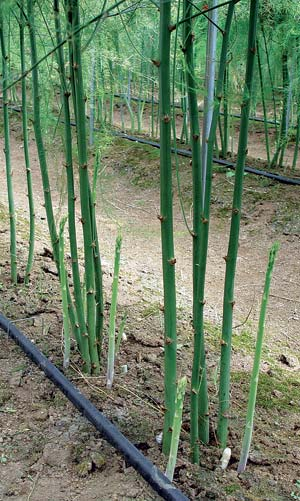

CHEE-KOK CHIN/RUTGERS UNIVERSITY
Here's a nifty trick for stretching your asparagus harvest a couple of weeks longer into late spring or early summer. Harvest your crop as usual for the first two weeks of the season. Then, select two or three sturdy spears from each plant, and allow them to grow undisturbed, while you continue to harvest the newly emerging spears. The leafy growth of the unharvested "mother stalks" will collect enough solar energy to stimulate the growth of additional spears for at least two weeks longer, according to researchers at Cornell and Rutgers universities. If weather is dry, water the plants to minimize stress. And to begin harvesting spears up to two weeks earlier in the spring, use black plastic mulch to warm the soil, conserve moisture and prevent weeds. (For more tips on extending your garden season, see our new "
Garden Know-how" department.)